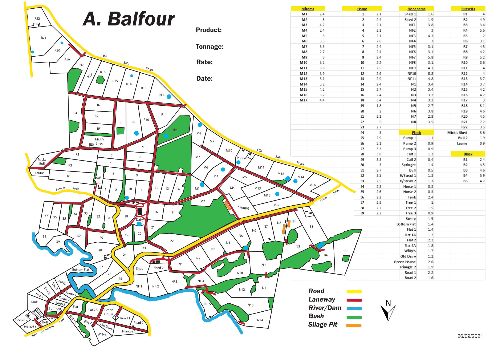

-- Portfolio --

Yarra Bend Park Amphitheatre Proposal

Jindabyne Calendar Map
{kind=link}

Railway Station Entrance Accessibility
{kind=link}
{kind=link}

{kind=link}
Farm Mapping
{kind=link}
-- Resume --

RMIT University
Bachelor of Science - BS Geospatial Science (Hons)
Melbourne
Studying Geospatial Science, I have learnt the theory & hands-on skills of Land Surveying
and the technical skills involved in Geographic Information Systems. I am passionate about Cartography and utilising
spatial data to create accessible & visually attractive maps. I enjoy combining the Geospatial skillset I have gained at
RMIT with my passion for transport and have recently focused my skills on using GIS to provide positive public transport outcomes.
Key Skills
Key Skills
- Cartography & Mapping projects.
- Spatial Data capture & analysis for asset management.
- Land Surveying & Cadastral Boundary work.
- Aerial Imagery analysis.
- Remote Imaging - Creating 3D digital models from photos.
Steamrail Victoria
Operations Team Member
Feb 2020 – Present
Working as part of the Operations Department team,
largely organising tour schedules & ticket sales for steam hauled day trips & shuttles.
This includes liaising with other tourism operators & venues such as wineries to organise day tour
packages for our passengers. Work also involves social media & marketing management for Steamrail Victoria,
and various administrative tasks delegated to the Operations Department by the Steamrail Board of Management & Operations Manager.
Workshop Trades Assistant
Feb 2019 – Present
Undertaking maintenance & restoration of vintage railway rollingstock.
Beginning work in the Carriage Shop, learning the day-to-day maintenance requirements of historic
wooden bodied carriages, I later moved into the Steam Locomotive workshop, working alongside qualified
Fitter & Turners with daily maintenance, heavy overhaul & cosmetic restoration of Steam Locomotives ranging
between 70 - 130 years old. I am now in a position of advising & managing certain aspects of carriage maintenance
& restoration projects, largely guiding volunteers with the process of carriage repaints & managing scheduled running maintenance tasks.
-- Contact --
Visit My LinkedIn